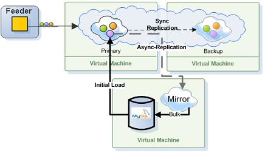

Section Summary: Reliable Asynchronous Persistency (Mirror)
Overview
The GigaSpaces Mirror Service (also known as Persistency as a Service, or PaaS) provides reliable asynchronous persistency. This allows you to asynchronously delegate the operations conducted with the In-Memory-Data-Grid (IMDG) into a backend database, significantly reducing the performance overhead.

The Mirror service ensures that data will not be lost in the event of a failure. This way, you can add persistency to your application just by running the Mirror Service, without touching the real-time portion of your application in either configuration or code. This service provides fine-grained control of which object needs to be persisted.
The mirror does need a backup since it does not hold any state. The actual state of the latest committed database transaction stored within the primary and the backup space instances, not in the Mirror. Essentially, the Mirror acts as a dispatcher and push the changes done at the space (all primary partitions) into the Database (or any other external data source) in an asynchronous reliable manner. In case of a failure of the Mirror, it will be restarted automatically and the primary instances will playback the un-committed transactions while the Mirror was down. The Mirror PU (like any deployed service) is mobile. It can run on any machine running a GSC, so the GSM will pick one of the existing GSCs to provision the missing Mirror PU.
If from some reason the SLA you applied forcing the Mirror PU to run on a specific machine that is unavailable (for example on a specific zone which does not have any running containers), the primary and backup will hold the transaction data within their redo log queue in memory. In some point they will store it on file until the Mirror machine will be restarted.
| You should not deploy the mirror in clustered mode nor have multiple instances of it. It should have a single instance as part of its SLA configuration. |
Enabling the Mirror Service involves the following:
- The Data-Grid Processing Unit Mirror Settings
- The Mirror Service Processing Unit Settings
The above share the same External Data Source settings but have different space settings. See the Hibernate External Data Source for details how to use the built-in HibernateExternalDataSource.
The Data-Grid Processing Unit
The cluster-config.mirror-service space settings specify the interaction between the IMDG primary spaces and the Mirror Service. The mirror="true" space element tag enables the replication mechanism from the IMDG Primary spaces to the Mirror Service. Once the mirror="true" is specified, all IMDG members will be Mirror aware and will be delegating their activities into the Mirror service. The IMDG primary instance will replicate the operations that have been logged within the primary redo log every interval-millis amount of time or interval-opers amount of operations. Both of these mechanisms are always active and the first one that is breached triggers the replication event.
| If you are not using the mirror="true" with the Data-Grid PU, you should use the following property instead: cluster-config.mirror-service.enabled=true |
The IMDG Mirror replication settings includes the following options:
| Property | Description | Default |
|---|---|---|
| cluster-config.mirror-service.url | used to locate the Mirror Service. In case you change the name of the Mirror Service specified as part of the Mirror PU, you should modify this parameter value to facilitate the correct Mirror service URL. | jini://*/mirror-service_container/mirror-service |
| cluster-config.mirror-service.bulk-size | The amount of operations to be transmitted in one bulk (in quantity and not actual memory size) from an active IMDG primary to the Mirror Service. | 100 |
| cluster-config.mirror-service.interval-millis | The replication frequency - Replication will happen every interval-millis mulliseconds | 2000 |
| cluster-config.mirror-service.interval-opers | The replication buffer size - Replication will happen every interval-opers operations. | 100 |
| cluster-config.groups.group.repl-policy.repl-original-state | The replication reconciliation mode - This settings should be enabled to ensure that write/take operations or multiple updates for the same space object will be sent to the mirror and not will be discarded when sent within the same batch. | true |
| cluster-config.mirror-service.on-redo-log-capacity-exceeded | Available options: block-operations - all cluster operations that need to be replicated (write/update/take) are blocked until the redo log size decreases below the capacity. (Users get RedoLogCapacityExceededException exceptions while trying to execute these operations.) drop-oldest - the oldest packet in the redo log is dropped. See the Controlling the Replication Redo Log for details. |
block-operations |
| cluster-config.mirror-service.redo-log-capacity | Specifies the total capacity of replication packets the redo log can hold for a mirror service replication target. See the Controlling the Replication Redo Log for details. |
1000000 |
| cluster-config.groups.group.repl-policy.async-replication.async-channel-shutdown-timeout | Determines how long (in ms) the primary space will wait before replicating all existing redo log data into its targets before shutting down. | 300000 ms |
| The Mirror Service may receive replication events from multiple active primary partitions. Each active partition sends its operations to the Mirror service via dedicated replication channel. The Mirror handles incoming replication requests simultaneously. Every Primary Space sending its operations to the Mirror Service in the same order the operations have been executed allowing the Mirror preserve the consistency of the data within the External Data Source. |
The Data-Grid Space settings would look like this:
<os-core:space id="space" url="/./space" schema="persistent" mirror="true" external-data-source="hibernateDataSource"> <os-core:properties> <props> <!-- Use ALL IN CACHE - Read Only from the database--> <prop key="space-config.engine.cache_policy">1</prop> <prop key="space-config.external-data-source.usage">read-only</prop> <prop key="cluster-config.cache-loader.external-data-source">true</prop> <prop key="cluster-config.cache-loader.central-data-source">true</prop> <prop key="cluster-config.mirror-service.url"> jini://*/mirror-service_container/mirror-service </prop> <prop key="cluster-config.mirror-service.bulk-size">100</prop> <prop key="cluster-config.mirror-service.interval-millis">2000</prop> <prop key="cluster-config.mirror-service.interval-opers">100</prop> <prop key="cluster-config.groups.group.repl-policy.repl-original-state">true</prop> </props> </os-core:properties> </os-core:space> <bean id="hibernateDataSource" class="org.openspaces.persistency.hibernate.DefaultHibernateExternalDataSource"> <property name="sessionFactory" ref="sessionFactory"/> </bean>
The above example:
- Configures the Space to connect to its mirror Space. By default, it will lookup a mirror Space called mirror-service.
- Configures the Space to only read data from the external data source (See the space-config.external-data-source.usage property). This means that all destructive operations will be delegated into the database via the Mirror service.
- Configures the Data-Grid to use an external data source that is central to the cluster. This means that both primary and backup IMDG instances will interact with the same External Data Source.
 See the External Data Source Properties and the Hibernate External Data Source for full details about the EDS properties the you may configure.
See the External Data Source Properties and the Hibernate External Data Source for full details about the EDS properties the you may configure.
You must use a Data-Grid cluster schema that includes a backup (i.e. partitioned-sync2backup) when running a Mirror Service. Without having backup, the Primary IMDG Spaces will not replicate their activities to the Mirror Service. For testing purposes, in case you don't want to start backup spaces, you can use the partitioned-sync2backup cluster schema and have 0 as the number of backups - this will still allow the primary spaces to replicate their operations to the Mirror.
The Mirror Processing Unit
The Mirror Service is constructed using the Mirror tag. The Mirror Service itself is not a regular Space. It is dispatching the operations which have been replicated from the IMDG primary spaces to the External Data Source (i.e. Database). The Mirror Service should be constructed as a separate processing unit, which includes only its definition.
The Mirror settings includes the following options:
| Property | Description | Default |
|---|---|---|
| operation-grouping | Options: group-by-space-transaction - Mirror delegating each transaction seperatly to the external data source (database). group-by-replication-bulk - Mirror delegating all replicated items as one bulk to the external data source (database). See the Mirror behavior with Distributed Transactions for details |
group-by-replication-bulk |
| source-space name | The name of source space (cluster) this mirror serves | NONE, must be supplied |
| source-space partitions | The number of partitions in source space (cluster) this mirror serves | NONE, must be supplied |
| source-space backups | The number of backups per partition in source space (cluster) this mirror serves | NONE, must be supplied |
The following configuration shows how to configure a processing unit, to act as the Mirror Service:
<os-sla:sla number-of-instances="1" /> <os-core:mirror id="mirror" url="/./mirror-service" external-data-source="hibernateDataSource" operation-grouping="group-by-replication-bulk"> <os-core:source-space name="mySpace" partitions="2" backups="1"/> </os-core:mirror> <bean id="hibernateDataSource" class="org.openspaces.persistency.hibernate.DefaultHibernateExternalDataSource"> <property name="sessionFactory" ref="sessionFactory"/> </bean>
The OpenSpaces mirror name space is a syntactic sugar and it is equivalent to the following configuration using regular space properties:
<os-core:space id="mirror" url="/./mirror-service" schema="mirror" external-data-source="hibernateDataSource"> <os-core:properties> <props> <prop key="space-config.mirror-service.cluster.name">mySpace</prop> <prop key="space-config.mirror-service.cluster.partitions">2</prop> <prop key="space-config.mirror-service.cluster.backups-per-partition">1</prop> <prop key="space-config.mirror-service.operation-grouping">group-by-replication-bulk</prop> </props> </os-core:properties> </os-core:space>
- The above configuration constructs a Mirror Service using GigaSpaces built-in Hibernate External Data Source. The hibernateDataSource should have its sessionFactory injected.
- The name of the Mirror Space is important. The mirror-service is the default name for a mirror Space, which is then used by the IMDG to connect to its mirror.
- The os-sla definition insures that there will be only one Mirror Service instance running.
- The configuration above should exist within the mirror PU pu.xml file.
The Mirror PU Content
The Mirror processing unit structure is shown below:
-- example-mirror ------ META-INF ---------- spring -------------- pu.xml
See the The Processing Unit Structure and Configuration for more information on the processing unit structure.
The relevant Hibernate JAR file and its third party dependencies should be available to the mirror processing unit. The jar files should be placed in the processing unit lib directory.
Mirror Undeploy
When cluster is undeployed, the mirror service must be undeployed last. This will ensure that all data is persisted properly through mirror async persistency.
Before primary space is undeployed/redeployed, all data changes are flushed to mirror. This operation is limited by timeout that can be configured using the following property:
<!-- default value is 5 minutes --> <prop key="cluster-config.groups.group.repl-policy.async-replication.async-channel-shutdown-timeout"> 300000 </prop>
Optimizing the Mirror Activity
|
The database update rate by the Mirror is a function of the number of IMDG partitions, database update speed with a single thread, database transaction size, network latency between the Mirror and the Database, hibernate overhead (if hibernate is being used as the persistence mechanism), relevant table indexed columns, and the database record size. Also, when distributed transactions are used with the IMDG, this may improve the database update rate (since multiple partitions will be sending their updates to the Mirror, which can batch all cumulative updates to the database), but this will impact the IMDG transaction latency. |
You might want to tune the IMDG and the Mirror activity to push data into the database faster. Here are some recommendations you should consider:
- Optimize the Space Class structure to include fewer fields. Less fields means less overhead when the IMDG replicates the data to the Mirror Service.
- Tune the bulk-size, interval-millis and interval-opers to perform the replication in larger batches and less frequently. This means you should increase the bulk-size, interval-millis and interval-opers to have larger values than the defaults. The exact values depends with the network speed, the average size of the objects and the database configuration and machine speed. Here is an example for a configuration that is relevant for IMDG with relatively small objects (less than one K) and high rate of operations (more than 10,000 operations per second for partition):
<prop key="cluster-config.mirror-service.bulk-size">10000</prop> <prop key="cluster-config.mirror-service.interval-millis">5000</prop> <prop key="cluster-config.mirror-service.interval-opers">50000</prop>
With the above configuration the primary partition will replicate its redo log activitities to the Mirror service every 5 seconds or every 50,000 operations. The replication will occure in batches of 10,000 objects per batch.
- Tune the External Data Source to commit data into the database in batches.
- Optimize the database transaction support.
- Use stateless session with the Hibernate External Data Source configuration. See the StatelessHibernateExternalDataSource.
- Implement a Mirror Service that will write the incoming data into a CSV file. This should be faster than writing data into the database. Later import the data into the database. (normally very fast operation)
- Increase the database maximum connections.
- Optimize Hibernate mapping and configuration. Using a proper Hibernate ID generator is crucial for getting optimum performance.
- Use PARTIAL_UPDATE (see Partial Update). Updates to an object that are performed using the PARTIAL_UPDATE modifier can be executed on the mirror as partial update as well. This can increase the performance in case a lot of updates are performed on a large object.
To use this optimization you need to set the following space property:
<prop key="cluster-config.mirror-service.supports-partial-update">true</prop>
If you are using a custom implementation of the External Data Source you also need to implement how the partial update is persisted.
See com.gigaspaces.datasource.BulkItem for more details.
Mirror Monitoring
The activity of the mirror service can be monitored using the Administration and monitoring API. This API exposes statistics on operations that were executed by the mirror and can be used to monitor the mirror throughput and health status.
You may view Mirror and its replication statistics via the GigaSpaces Management Center. Move into the Space Browser tab, click the top tree Spaces icon, right click the table columns title area on the right panel, select the columns you would to view as part of the table and click OK.
{kind=link}
| See also the Mirror Monitor JMX utility for graphical mirror service monitoring via JMX |
Advanced Information & Operations
For more advanced operations and information see Async Persistency - Mirror - Advanced.